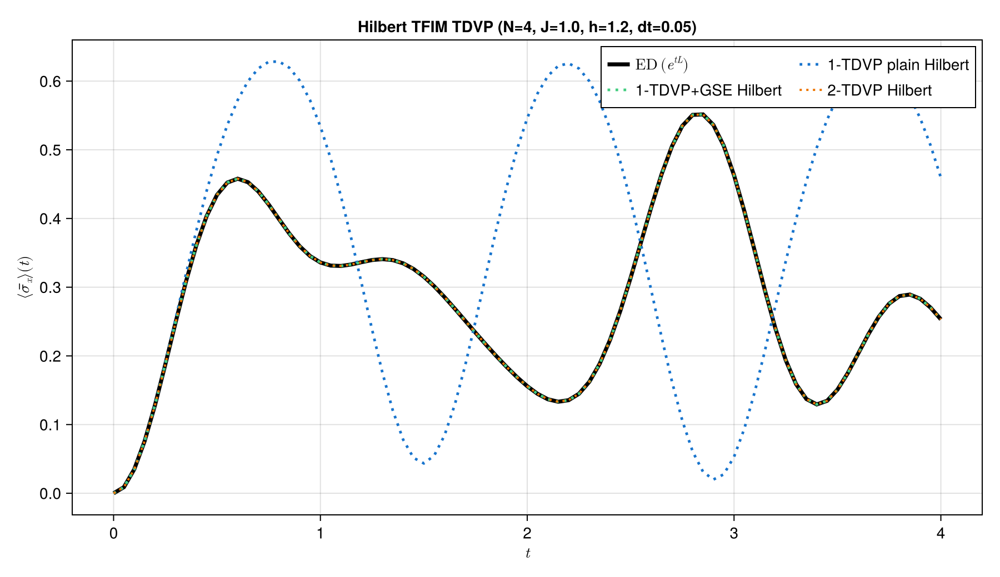
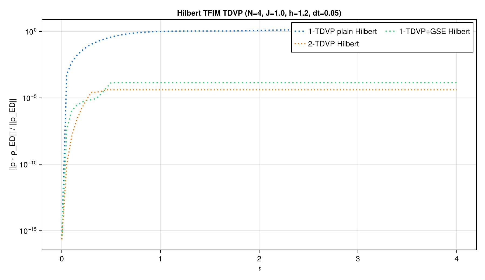

TDVP time evolution
In this example, we use the time-dependent variational principle (TDVP) to evolve a transverse-field Ising chain.
The goal is to compare TDVP as a time-evolution algorithm in two different representations:
- Hilbert space, where the state is an MPS
|ψ(t)⟩. - Liouville space, where the density matrix is vectorized as
|ρ(t)⟩⟩.
For a closed unitary system, both descriptions represent the same physical dynamics. However, the variational geometry seen by TDVP is different in the two cases. This example is designed to make that difference visible.
We study three TDVP variants in each representation:
- plain 1TDVP,
- 1TDVP with global subspace expansion (GSE),
- 2TDVP.
See also the Unitary Dynamics tutorial and scripts/tdvp_tfim_unitary.jl, which regenerates the benchmark figures.
Setup
using Printf
using ProcessTensors
using ITensors
using ITensorMPS: expand, orthogonalize!
using LinearAlgebra
function tfim_hamiltonian(N::Int; J::Float64=1.0, h::Float64=1.2)
os = OpSum()
for j in 1:(N - 1)
os += -J, "Z", j, "Z", j + 1
end
for j in 1:N
os += -h, "X", j
end
return os
end
function single_site_pauli_mpos(op::AbstractString, physical_sites)
N = length(physical_sites)
return MPO{Hilbert}[
let os = OpSum()
os += 1.0, op, j
MPO(os, physical_sites)
end for j in 1:N
]
endsingle_site_pauli_mpos (generic function with 1 method)For larger systems, increase N; the TDVP code is unchanged, while the ED reference should be omitted.
const N = 4
const J = 1.0
const h = 1.2
const T_max = 4.0
const dt = 0.05
const nsteps = round(Int, T_max / dt)
const maxdim_1site = 50
const maxdim_2site = 50
const cutoff = 1e-10
const gse_every_steps = 10
const krylovdim = 2
const gse_cutoff = 1e-8
const n_exact = 81
function mean_sx(state::AbstractMPS{Hilbert}, x_mpos)
return real(sum(inner(state', O, state) for O in x_mpos) / length(x_mpos))
end
function mean_sx(state::AbstractMPS{Liouville}, x_mpos)
ρ_h = to_hilbert(state)
s = 0.0
for O in x_mpos
ρO = apply(O, ρ_h; alg="naive", truncate=false)
s += real(tr(ρO))
end
return s / length(x_mpos)
end
state_energy(state::AbstractMPS{Hilbert}, H_mpo) = real(inner(state', H_mpo, state))
function state_energy(state::AbstractMPS{Liouville}, H_mpo)
ρ_h = to_hilbert(state)
return real(tr(apply(H_mpo, ρ_h; alg="naive", truncate=false)))
end
function trajectory_metrics(states, x_mpos, H_mpo)
times = collect(range(0.0, T_max; length=length(states)))
rho_errs = Float64[]
sx = Float64[]
E0 = state_energy(first(states), H_mpo)
energy_drift = Float64[]
for (t, state) in zip(times, states)
ρ_ed = exact_density_at(t, L_dense, vec0, d)
push!(rho_errs, density_error(state_to_density_dense(state, physical_sites), ρ_ed))
push!(sx, mean_sx(state, x_mpos))
push!(energy_drift, state_energy(state, H_mpo) - E0)
end
return (; times, rho_errs, sx, energy_drift, max_bond=maximum(maxlinkdim, states))
end
function summarize_run(label::AbstractString, run, x_mpos, H_mpo)
return (; label, elapsed=run.elapsed, metrics=trajectory_metrics(run.states, x_mpos, H_mpo))
end
function print_tdvp_summary(result)
max_energy_drift = maximum(abs, result.metrics.energy_drift)
@printf("%s\n", result.label)
@printf(" Total time taken: %.3f s\n", result.elapsed)
@printf(" |ρ - ρ_ED|: %.3e\n", result.metrics.rho_errs[end])
@printf(" max bond dim: %d\n", result.metrics.max_bond)
@printf(" max energy drift: %.3e\n", max_energy_drift)
println()
endprint_tdvp_summary (generic function with 1 method)Model and initial state
We use the transverse-field Ising model
\[H = -J \sum_{j=1}^{N-1} Z_j Z_{j+1} -h \sum_{j=1}^{N} X_j .\]
The initial state is the product state
\[|\psi(0)\rangle = |\uparrow \uparrow \cdots \uparrow\rangle .\]
We compare the TDVP trajectories against a dense exact-diagonalization reference. The dense reference is only used because this is a small documentation example; the TDVP code itself is the tensor-network method.
physical_sites = siteinds("S=1/2", N)
liouv_sites_shared = liouv_sites(physical_sites)
os_H = tfim_hamiltonian(N; J=J, h=h)
H_mpo = MPO(os_H, physical_sites)
jump_ops = Tuple{Number, String, Int}[]
ψ0 = MPS(physical_sites, fill("Up", N))
ρ0 = to_dm(ψ0)
ρ0_vec = to_liouville(ρ0; sites=liouv_sites_shared)
x_mpos = single_site_pauli_mpos("X", physical_sites)
z_mpos = single_site_pauli_mpos("Z", physical_sites)
@assert isapprox(real(sum(inner(ψ0', O, ψ0) for O in z_mpos) / N), 1.0; atol=1e-10)Exact diagonalization reference
We use ED only to make the TDVP approximation error visible. The scalable method is TDVP itself.
In Liouville space the vectorized density matrix obeys $|\rho(t)\rangle\rangle = e^{t\mathcal{L}}|\rho(0)\rangle\rangle$ with $\mathcal{L}\rho = -i[H,\rho]$ for closed dynamics.
function hilbert_mpo_to_dense(ρ::AbstractMPO{Hilbert}, physical_sites)
T = foldl(*, ρ)
A = Array(T, prime.(physical_sites)..., physical_sites...)
return reshape(ComplexF64.(A), prod(dim.(physical_sites)), prod(dim.(physical_sites)))
end
function hilbert_matrix_to_mpo(M::AbstractMatrix{<:Number}, physical_sites)
dims = vcat(dim.(prime.(physical_sites)), dim.(physical_sites))
T = ITensor(reshape(ComplexF64.(M), Tuple(dims)), prime.(physical_sites)..., physical_sites...)
return MPO(T, physical_sites)
end
function dense_liouvillian_matrix(os_H::OpSum, jump_ops, physical_sites, liouv_sites_shared)
L_mpo = MPO_Liouville(os_H, liouv_sites_shared; jump_ops=jump_ops)
d = prod(dim.(physical_sites))
d2 = d * d
L_dense = zeros(ComplexF64, d2, d2)
for b in 1:d, a in 1:d
q = a + (b - 1) * d
E = zeros(ComplexF64, d, d)
E[a, b] = 1.0
basis_q = to_liouville(hilbert_matrix_to_mpo(E, physical_sites); sites=liouv_sites_shared)
σ_q = apply(L_mpo, basis_q; cutoff=0.0, maxdim=typemax(Int))
ρ_out = hilbert_mpo_to_dense(to_hilbert(σ_q), physical_sites)
L_dense[:, q] = vec(ρ_out)
end
return L_dense
end
state_to_density_dense(state::AbstractMPS{Hilbert}, physical_sites) =
hilbert_mpo_to_dense(to_dm(state), physical_sites)
state_to_density_dense(state::AbstractMPS{Liouville}, physical_sites) =
hilbert_mpo_to_dense(to_hilbert(state), physical_sites)
density_error(ρ::AbstractMatrix, ρ_ref::AbstractMatrix) =
norm(ρ - ρ_ref) / max(norm(ρ_ref), eps(Float64))
function dense_one_site_operator(op_name::AbstractString, physical_sites, site::Int)
local_ops = Matrix{ComplexF64}[]
for (j, s) in enumerate(physical_sites)
if j == site
push!(local_ops, Array(op(op_name, s), prime(s), s))
else
push!(local_ops, Matrix{ComplexF64}(I, dim(s), dim(s)))
end
end
return foldl(kron, local_ops)
end
function exact_density_at(t::Real, L_dense::AbstractMatrix, vec0::AbstractVector, d::Int)
Lt = ComplexF64.(L_dense)
v0 = ComplexF64.(vec0)
vt = iszero(t) ? v0 : exp(t * Lt) * v0
return reshape(vt, d, d)
end
function mean_sx_from_density(ρ::AbstractMatrix, x_ops)
return real(sum(tr(ρ * O) for O in x_ops) / length(x_ops))
end
function exact_sx_trajectory(L_dense, vec0, d, x_ops, times::AbstractVector)
return Float64[mean_sx_from_density(exact_density_at(t, L_dense, vec0, d), x_ops) for t in times]
end
println("Building Liouville ED reference...")
d = prod(dim.(physical_sites))
vec0 = vec(ComplexF64.(hilbert_mpo_to_dense(ρ0, physical_sites)))
L_dense = dense_liouvillian_matrix(os_H, jump_ops, physical_sites, liouv_sites_shared)
x_ops = [dense_one_site_operator("X", physical_sites, j) for j in 1:N]
t_exact = collect(range(0.0, T_max; length=n_exact))
sx_exact = exact_sx_trajectory(L_dense, vec0, d, x_ops, t_exact)
println("Final Sx: ", sx_exact[end])Building Liouville ED reference...
Final Sx: 0.25318952364501845
Hilbert-space TDVP
We first evolve the pure-state MPS directly under the Hamiltonian MPO.
The three Hilbert-space runs are:
- plain 1TDVP,
- 1TDVP with global subspace expansion,
- 2TDVP.
1TDVP and 2TDVP
TDVP does not apply local Trotter gates. Instead, it projects the exact time-evolution equation onto the tangent space of the MPS manifold.
For Hilbert-space Schrödinger evolution,
\[\frac{d}{dt}|\psi(t)\rangle = -iH|\psi(t)\rangle .\]
If |ψ[A]⟩ is restricted to the MPS manifold 𝓜_D, TDVP evolves by
\[\frac{d}{dt}|\psi[A]\rangle = -i P_{T_{|\psi\rangle}\mathcal{M}_D} H|\psi[A]\rangle .\]
In 1TDVP, the bond dimensions remain fixed. This gives good conservation properties in Hilbert space, especially for energy, but it also means that 1TDVP cannot grow the entanglement structure by itself.
In 2TDVP, two-site tensors are evolved and then factorized again with an SVD. This allows the bond dimension to grow, up to maxdim, but the SVD truncation weakens the exact conservation properties of 1TDVP.
function tdvp_trajectory(state0, operator, time_step, dt::Float64, nsteps::Int; nsite::Int, maxdim::Int, cutoff::Float64)
states = Vector{typeof(state0)}(undef, nsteps + 1)
states[1] = copy(state0)
current = copy(state0)
elapsed = @elapsed begin
for step in 1:nsteps
current = tdvp(
operator,
time_step,
current;
time_step=time_step,
nsite=nsite,
maxdim=maxdim,
cutoff=cutoff,
outputlevel=0,
)
states[step + 1] = current
end
end
return (; states, elapsed)
endtdvp_trajectory (generic function with 1 method)Global subspace expansion
Plain 1TDVP evolves inside a fixed-bond-dimension manifold. This can be too restrictive if the exact dynamics quickly generates entanglement.
Global subspace expansion enriches the MPS basis before a 1TDVP step. It adds dynamically relevant directions generated by a Krylov subspace.
For Hilbert-space dynamics, the relevant Krylov space is
\[\mathcal{K}_m(H,|\psi\rangle) = \operatorname{span} \{|\psi\rangle, H|\psi\rangle, H^2|\psi\rangle,\dots,H^{m-1}|\psi\rangle\}.\]
The important point is that subspace expansion does not change the physical state intentionally. It changes the available bond basis so that the next 1TDVP step can move in a larger variational manifold:
\[\mathcal{M}_D \longrightarrow \mathcal{M}_{D'}, \qquad D' \ge D .\]
function gse_expand_state(state::MPS{Hilbert}, operator; krylovdim::Int, gse_cutoff::Float64, gse_maxdim::Int)
expanded_core = expand(
state.core,
operator.core;
alg="global_krylov",
krylovdim=krylovdim,
cutoff=gse_cutoff,
apply_kwargs=(; maxdim=gse_maxdim),
)
orthogonalize!(expanded_core, 1)
return MPS{Hilbert}(expanded_core)
end
function tdvp1_gse_trajectory(
state0,
operator,
time_step,
dt::Float64,
nsteps::Int;
maxdim::Int,
cutoff::Float64,
krylovdim::Int,
gse_cutoff::Float64,
gse_maxdim::Int,
gse_every_steps::Int,
)
states = Vector{typeof(state0)}(undef, nsteps + 1)
states[1] = copy(state0)
current = copy(state0)
elapsed = @elapsed begin
for step in 1:nsteps
if step == 1 || (gse_every_steps > 0 && (step - 1) % gse_every_steps == 0)
current = gse_expand_state(
current,
operator;
krylovdim=krylovdim,
gse_cutoff=gse_cutoff,
gse_maxdim=gse_maxdim,
)
end
current = tdvp(
operator,
time_step,
current;
time_step=time_step,
nsite=1,
maxdim=maxdim,
cutoff=cutoff,
outputlevel=0,
)
states[step + 1] = current
end
end
return (; states, elapsed)
end
println("Hilbert-space TDVP")
println("------------------")
hilbert_runs = NamedTuple[]
for (label, nsite, maxdim, runner, kwargs) in (
("Hilbert 1TDVP", 1, maxdim_1site, tdvp_trajectory, NamedTuple()),
(
"Hilbert 1TDVP + GSE",
1,
maxdim_1site,
tdvp1_gse_trajectory,
(;
krylovdim=krylovdim,
gse_cutoff=gse_cutoff,
gse_maxdim=maxdim_1site,
gse_every_steps=gse_every_steps,
),
),
("Hilbert 2TDVP", 2, maxdim_2site, tdvp_trajectory, NamedTuple()),
)
run = if runner === tdvp1_gse_trajectory
runner(ψ0, H_mpo, -1im * dt, dt, nsteps; maxdim=maxdim, cutoff=cutoff, kwargs...)
else
runner(ψ0, H_mpo, -1im * dt, dt, nsteps; nsite=nsite, maxdim=maxdim, cutoff=cutoff)
end
result = summarize_run(label, run, x_mpos, H_mpo)
push!(hilbert_runs, result)
print_tdvp_summary(result)
endHilbert-space TDVP
------------------
Hilbert 1TDVP
Total time taken: 0.815 s
|ρ - ρ_ED|: 1.163e+00
max bond dim: 1
max energy drift: 1.288e-14
Hilbert 1TDVP + GSE
Total time taken: 5.851 s
|ρ - ρ_ED|: 1.421e-04
max bond dim: 4
max energy drift: 3.064e-14
Hilbert 2TDVP
Total time taken: 1.440 s
|ρ - ρ_ED|: 4.063e-05
max bond dim: 4
max energy drift: 1.460e-10



Liouville-space TDVP
We now repeat the same unitary dynamics in Liouville space.
In Liouville space, we vectorize the density matrix:
\[\rho \mapsto |\rho\rangle\rangle .\]
For closed unitary dynamics,
\[\frac{d}{dt}\rho(t) = -i[H,\rho(t)] ,\]
which becomes
\[\frac{d}{dt}|\rho(t)\rangle\rangle = \mathcal{L}|\rho(t)\rangle\rangle .\]
TDVP can also be applied to this Liouville-space MPS. But the conservation story must be read carefully. In Hilbert space, 1TDVP is naturally aligned with the physical Hamiltonian expectation ⟨H⟩. In Liouville space, TDVP is applied to the vectorized density matrix under the Liouvillian superoperator. The physical energy
\[E(t) = \operatorname{Tr}(H\rho(t))\]
is not the same variational object that the Hilbert-space 1TDVP conservation argument protects. Therefore, energy conservation in Liouville-space TDVP should not be interpreted in exactly the same way.
For Liouville-space dynamics, global subspace expansion uses the Krylov space
\[\mathcal{K}_m(\mathcal{L},|\rho\rangle\rangle) = \operatorname{span} \{|\rho\rangle\rangle, \mathcal{L}|\rho\rangle\rangle, \mathcal{L}^2|\rho\rangle\rangle,\dots\}.\]
Since this is a closed system, we pass no jump operators. The Liouvillian MPO therefore represents only the commutator dynamics.
function gse_expand_state(state::MPS{Liouville}, operator; krylovdim::Int, gse_cutoff::Float64, gse_maxdim::Int)
expanded_core = expand(
state.core,
operator.core;
alg="global_krylov",
krylovdim=krylovdim,
cutoff=gse_cutoff,
apply_kwargs=(; maxdim=gse_maxdim),
)
orthogonalize!(expanded_core, 1)
return MPS{Liouville}(expanded_core, state.combiners)
end
L_mpo = MPO_Liouville(os_H, liouv_sites_shared; jump_ops=jump_ops)
println("Liouville-space TDVP")
println("--------------------")
liouville_runs = NamedTuple[]
for (label, nsite, maxdim, runner, kwargs) in (
("Liouville 1TDVP", 1, maxdim_1site, tdvp_trajectory, NamedTuple()),
(
"Liouville 1TDVP + GSE",
1,
maxdim_1site,
tdvp1_gse_trajectory,
(;
krylovdim=krylovdim,
gse_cutoff=gse_cutoff,
gse_maxdim=maxdim_1site,
gse_every_steps=gse_every_steps,
),
),
("Liouville 2TDVP", 2, maxdim_2site, tdvp_trajectory, NamedTuple()),
)
run = if runner === tdvp1_gse_trajectory
runner(ρ0_vec, L_mpo, dt, dt, nsteps; maxdim=maxdim, cutoff=cutoff, kwargs...)
else
runner(ρ0_vec, L_mpo, dt, dt, nsteps; nsite=nsite, maxdim=maxdim, cutoff=cutoff)
end
result = summarize_run(label, run, x_mpos, H_mpo)
push!(liouville_runs, result)
print_tdvp_summary(result)
end
@assert all(isfinite, hilbert_runs[1].metrics.rho_errs)
@assert isapprox(
density_error(state_to_density_dense(ψ0, physical_sites), exact_density_at(0.0, L_dense, vec0, d)),
0.0;
atol=1e-12,
)Liouville-space TDVP
--------------------
Liouville 1TDVP
Total time taken: 0.191 s
|ρ - ρ_ED|: 1.163e+00
max bond dim: 1
max energy drift: 8.882e-15
Liouville 1TDVP + GSE
Total time taken: 5.288 s
|ρ - ρ_ED|: 4.416e-02
max bond dim: 16
max energy drift: 3.610e-02
Liouville 2TDVP
Total time taken: 6.193 s
|ρ - ρ_ED|: 5.709e-05
max bond dim: 16
max energy drift: 3.813e-05


- Hilbert-space 1TDVP conserves energy most strictly inside a fixed-bond manifold, but may miss entanglement growth needed for accurate observables.
- Global subspace expansion enlarges the 1TDVP basis without switching to full two-site updates; 2TDVP grows bonds but SVD truncation weakens strict conservation.
- Liouville-space TDVP solves the same physics with a different variational geometry; interpret energies through the reconstructed density matrix.